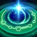

BRAVADO
Spellcasts empower Taric's next 2 basic attacks to deal bonus magic damage, reduce his spell cooldowns, and attack in quick succession.
STARLIGHT'S TOUCH
Heals nearby allied champions based on charges stored.
Bravado-empowered attacks grant a charge of Starlight's Touch.
BASTION
Passively increase the Armor of Taric and any allied champion with Bastion.
Actively shields an ally and grants them Bastion for as long as they remain near Taric.
Taric's spells also cast off the ally with Bastion.
DAZZLE
Taric readies a beam of starlight that, after a brief delay, deals magic damage and stuns enemies.
COSMIC RADIANCE
Pulses cosmic energy onto nearby allied champions after a delay, making them invulnerable for a short duration.